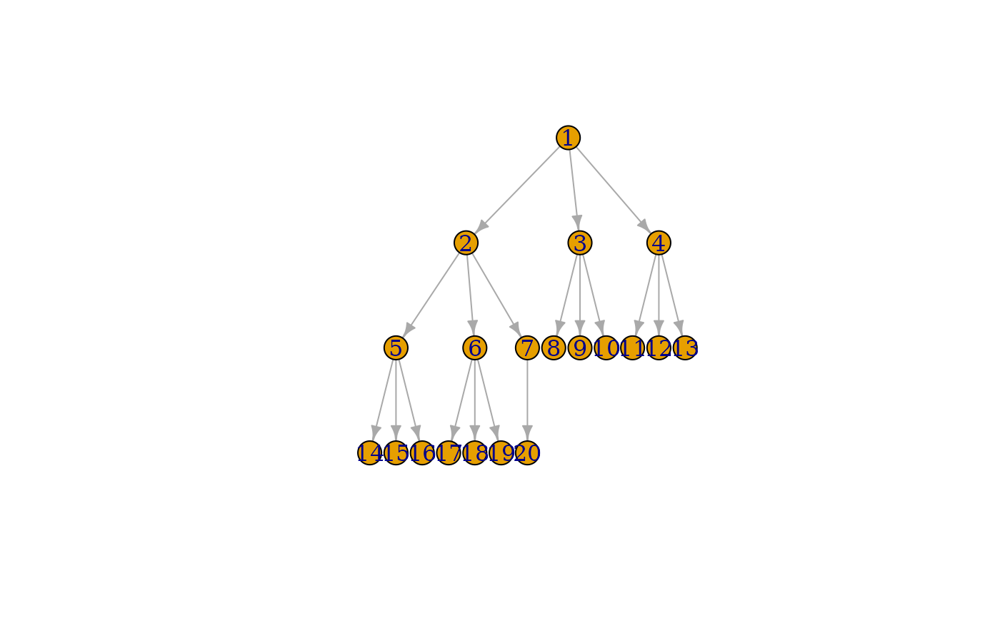
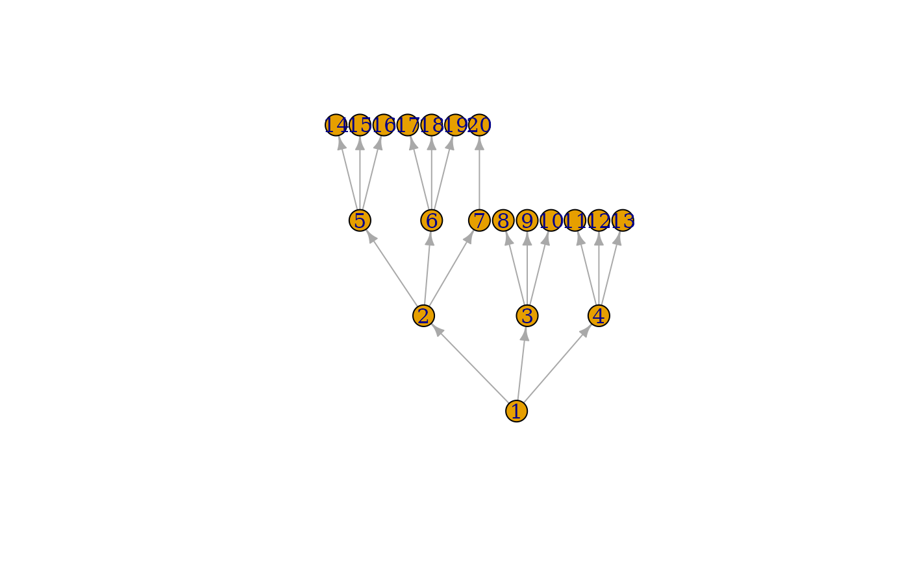
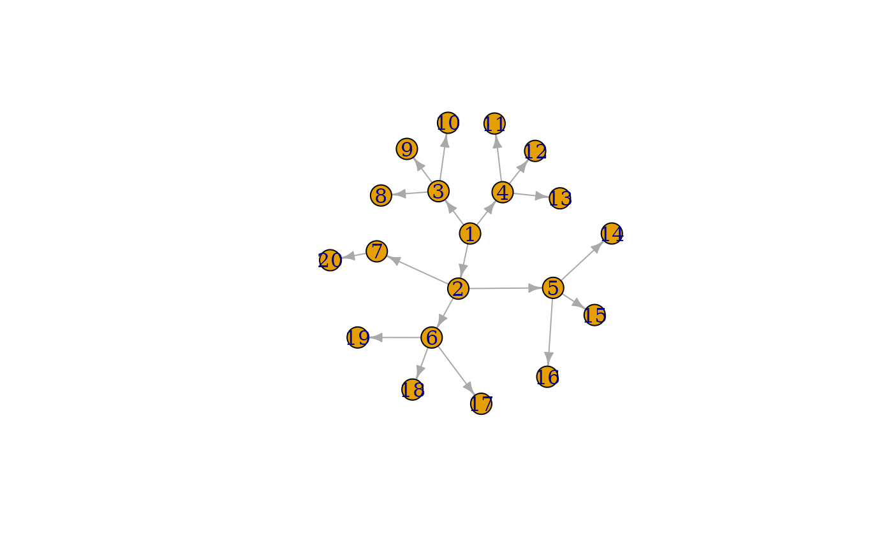
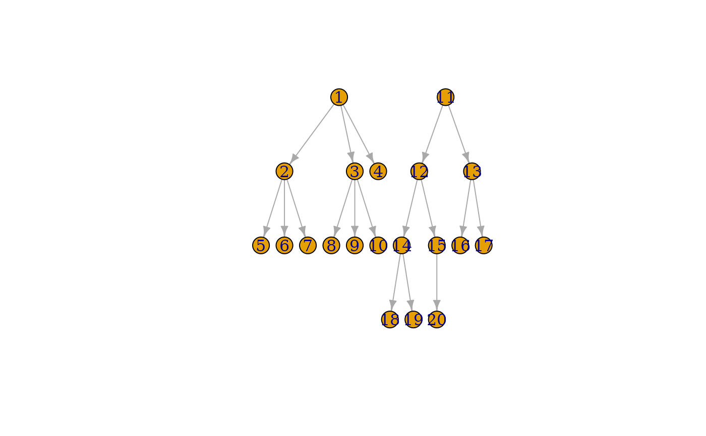
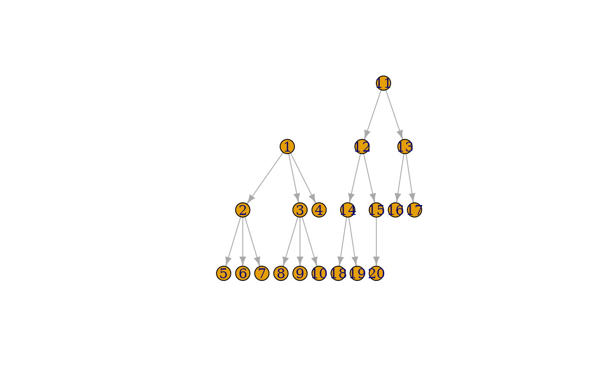

A tree-like layout, it is perfect for trees, acceptable for graphs with not too many cycles.
Arguments
- graph
The input graph.
- root
The index of the root vertex or root vertices. If this is a non-empty vector then the supplied vertex ids are used as the roots of the trees (or a single tree if the graph is connected). If it is an empty vector, then the root vertices are automatically calculated based on topological sorting, performed with the opposite mode than the
modeargument. After the vertices have been sorted, one is selected from each component.- circular
Logical scalar, whether to plot the tree in a circular fashion. Defaults to
FALSE, so the tree branches are going bottom-up (or top-down, see theflip.yargument.- rootlevel
This argument can be useful when drawing forests which are not trees (i.e. they are unconnected and have tree components). It specifies the level of the root vertices for every tree in the forest. It is only considered if the
rootsargument is not an empty vector.- mode
Specifies which edges to consider when building the tree. If it is ‘out’, then only the outgoing, if it is ‘in’, then only the incoming edges of a parent are considered. If it is ‘all’ then all edges are used (this was the behavior in igraph 0.5 and before). This parameter also influences how the root vertices are calculated, if they are not given. See the
rootsparameter.- flip.y
Logical scalar, whether to flip the ‘y’ coordinates. The default is flipping because that puts the root vertex on the top.
- ...
Passed to
layout_as_tree().
Details
Arranges the nodes in a tree where the given node is used as the root. The tree is directed downwards and the parents are centered above its children. For the exact algorithm, the reference below.
If the given graph is not a tree, a breadth-first search is executed first to obtain a possible spanning tree.
References
Reingold, E and Tilford, J (1981). Tidier drawing of trees. IEEE Trans. on Softw. Eng., SE-7(2):223--228.
See also
Other graph layouts:
add_layout_(),
component_wise(),
layout_(),
layout_as_bipartite(),
layout_as_star(),
layout_in_circle(),
layout_nicely(),
layout_on_grid(),
layout_on_sphere(),
layout_randomly(),
layout_with_dh(),
layout_with_fr(),
layout_with_gem(),
layout_with_graphopt(),
layout_with_kk(),
layout_with_lgl(),
layout_with_mds(),
layout_with_sugiyama(),
merge_coords(),
norm_coords(),
normalize()
Author
Tamas Nepusz ntamas@gmail.com and Gabor Csardi csardi.gabor@gmail.com
Examples
tree <- make_tree(20, 3)
plot(tree, layout = layout_as_tree)

plot(tree, layout = layout_as_tree(tree, flip.y = FALSE))

plot(tree, layout = layout_as_tree(tree, circular = TRUE))

tree2 <- make_tree(10, 3) + make_tree(10, 2)
plot(tree2, layout = layout_as_tree)

plot(tree2, layout = layout_as_tree(tree2,
root = c(1, 11),
rootlevel = c(2, 1)
))
